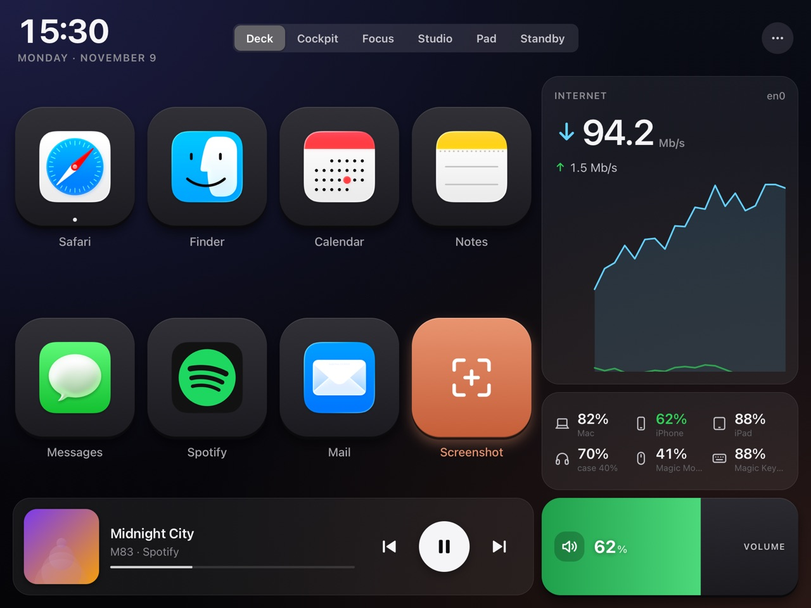
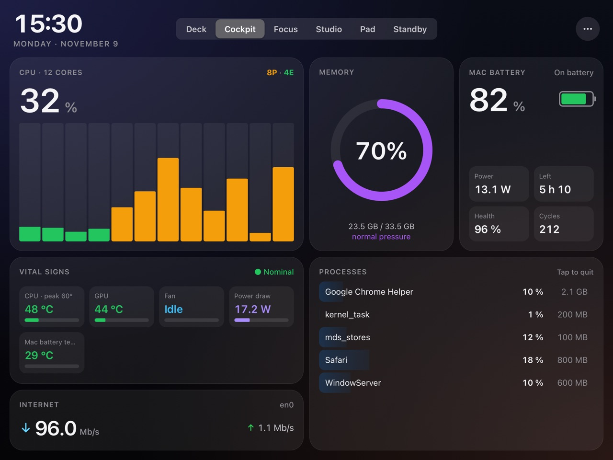
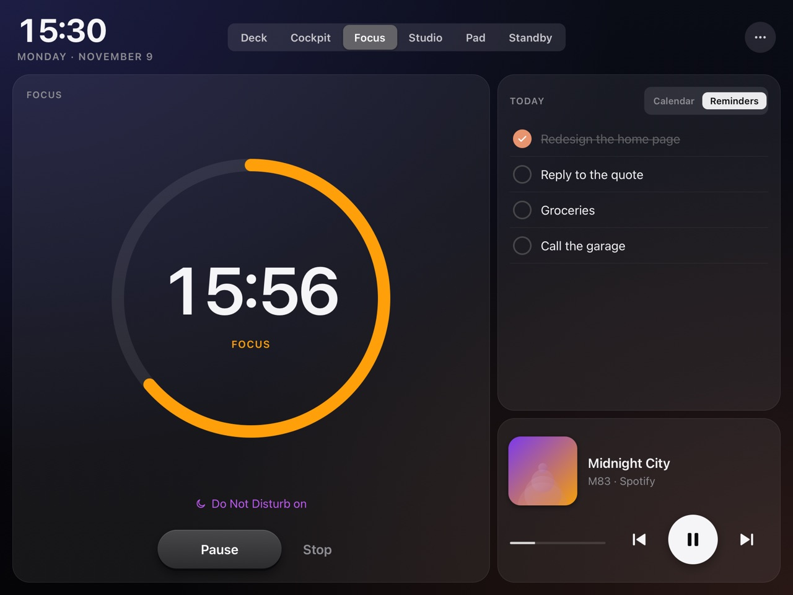
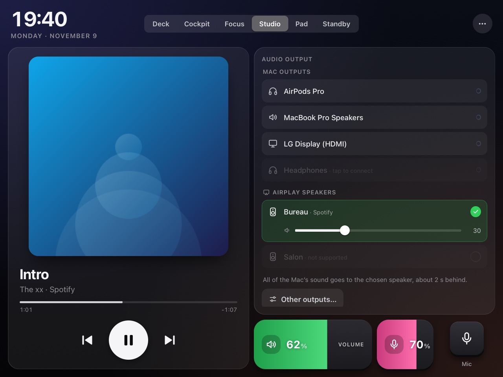
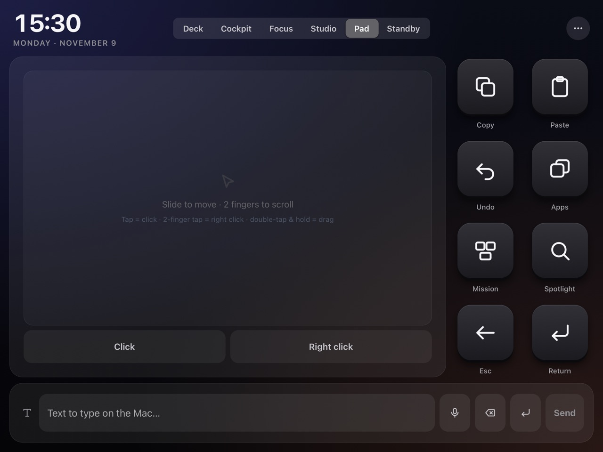
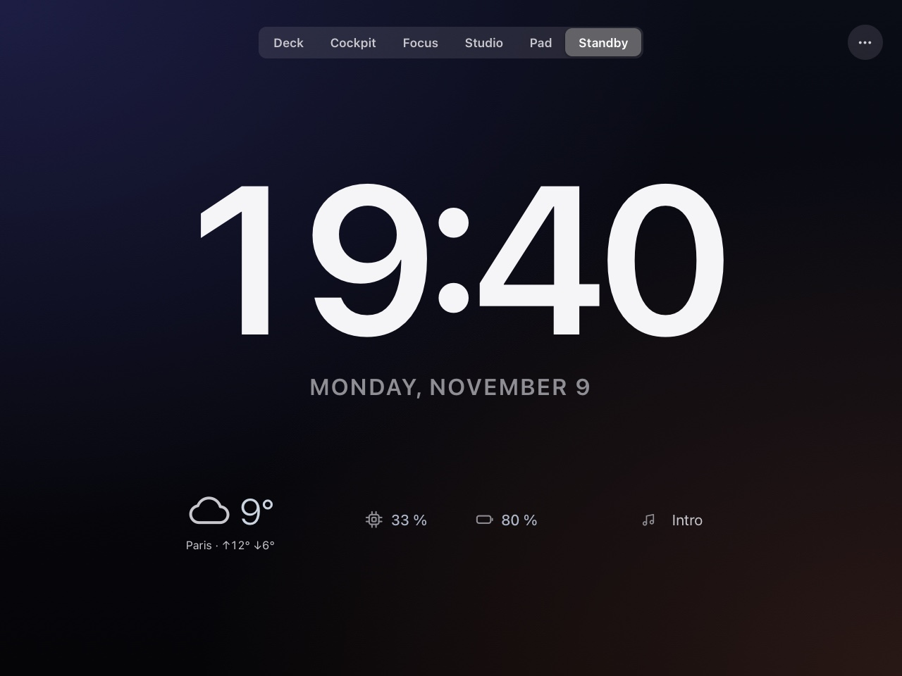
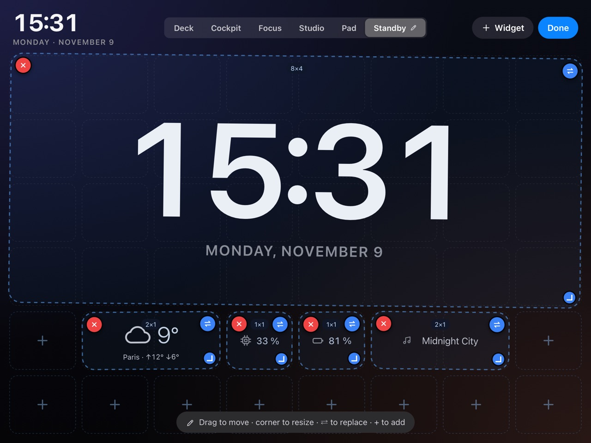

Your old iPad,
back on your desk.
OldPadDeck turns the iPad stuck on iOS 12 in your drawer into a Stream Deck-style controller and a live dashboard for your Mac. Nothing to install on the iPad: it's all in Safari.
Free · macOS 14 or later · Apple silicon and Intel · Signed and notarized by Apple







- Runs on iOS 12 Safari
- No App Store, no jailbreak
- In the app: no account, no cloud, no analytics
- Hardware you already own
Control, watch, focus.
That iPad still has a great screen. Give it something to do next to your keyboard.
Control the Mac
Keys that open apps, websites and Shortcuts, send key combos or type text. Volume, brightness and mic sliders. A real trackpad. Window tiling, dark mode, lock, screenshot.
ControlsSee what it's doing
CPU per core, memory pressure, GPU, disk, network, temperatures, fans and power draw, live every second. The processes using it all, one long press away from quitting.
Mac widgetsStay in the zone
A Pomodoro that can turn on Do Not Disturb, today's calendar and reminders you check off from the iPad, now playing, and a calm clock when you step away.
Focus widgetsEvery widget moves.
Every screen is a grid of widgets. Tap ✎ and arrange it the way you work.
- Move, resize, replace or delete any widget, with undo.
- Add from the catalog: some two dozen widgets in six categories, each with its own settings.
- Your own tabs: up to six. Rename, delete or swap the built-in modes for your own.
- Saved on the Mac. App updates never overwrite a layout you've customised.
One list for every speaker.
Pick where the Mac's sound goes from the iPad: built-in speakers, a display, wired or USB, a Bluetooth headset, or an AirPlay speaker on your network.
- Its own AirPlay sender streams all of the Mac's sound to a compatible speaker, not just the Music app.
- Bluetooth headsets that are paired but asleep connect with one tap.
- Volume follows: the slider and the Mac's volume keys drive whatever is playing.
It feels like it belongs there.
It follows you
Switch to Spotify and the iPad goes to Studio; start a Pomodoro and it goes to Focus. Pin a mode to stop that.
It talks
Optional voice announcements for a low battery or the end of a Pomodoro.
It rests
After 10 idle minutes it switches to Standby: a big clock, the weather and a few numbers.
Your language
The iPad interface is in English, or in French when the iPad is set to French.
Built for an old iPad
A small bundle checked against Safari 12 on every build, made to run all day on 1 GB of RAM.
Paired, not open
A one-time PIN to pair, local network only, and every device can be revoked from the menu bar.
Three steps, five minutes.
Install the Mac app
Download the disk image, drag OldPadDeck to Applications and open it. An iPad icon appears in the menu bar.
OldPadDeck.dmgPair the iPad
Open Pair a Device… from the menu bar, then scan the QR code with the iPad or type the 6-digit PIN in Safari.
Make it a desk display
In Safari: Share → Add to Home Screen. Set Auto-Lock to Never and keep it on its charger.
Take the iPad out of the drawer.
Free, and built on hardware you already own.